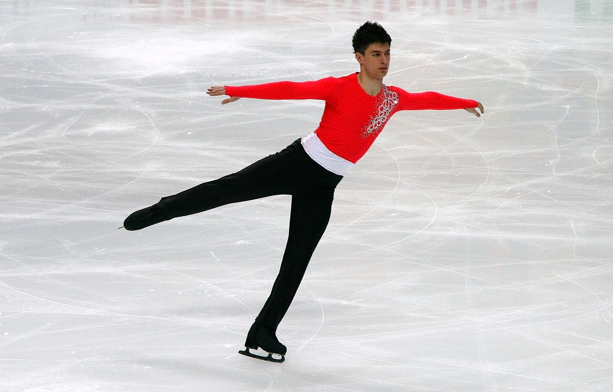
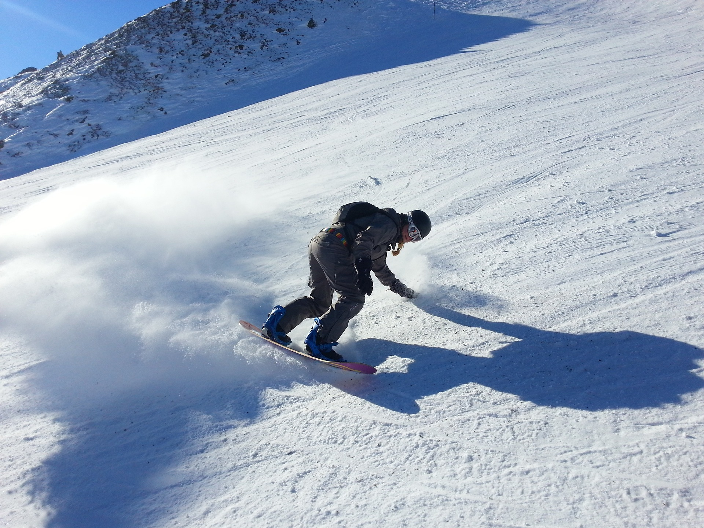

A téli sportok története
A téli sportok története nagyon régre nyúlik vissza. A legrégebbi bizonyíték a síelésre egy 8000 éves síléc, amelyet Svédországban találtak. A korcsolyázásra utaló első írásos emlék az ókori görögök idejéből származik, akik csontdarabokat kötöttek a lábukra a jégen való csúszkáláshoz. A szánkózás és a szánhúzás már az ókorban is elterjedt volt Európa és Ázsia egyes területein. A jégkorongozást először az 1700-as években említették Kanadában, mint egy angol katonák által játszott játékot. A modern téli sportok kialakulása a 19. században kezdődött meg, amikor több európai országban megalakultak az első síklubok és síversenyeket rendeztek. Az első téli olimpiát 1924-ben tartották Franciaországban, ahol 16 ország vett részt 6 sportágban: Alpesi sí Műkorcsolya Gyorskorcsolya Jégkorong Síelés MűugrásKépgaléria


